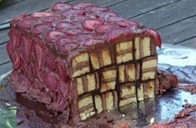

zurück
Erdbeer-Streifen-Kuchen
Zubereitungszeit: 80min

- Streifenkuchen in unausgezogener Backform backen
- Etwas auskühlen lassen, währenddessen die Erdbeeren in scheiben schneiden
- Den Kuchen in Streifen schneiden
- Mit Schokocreme verdreht aufeinander kleben, wie auf dem Bild
- Oben und an den Seiten mit Schokocreme einstreichen und mit Erdbeeren belegen